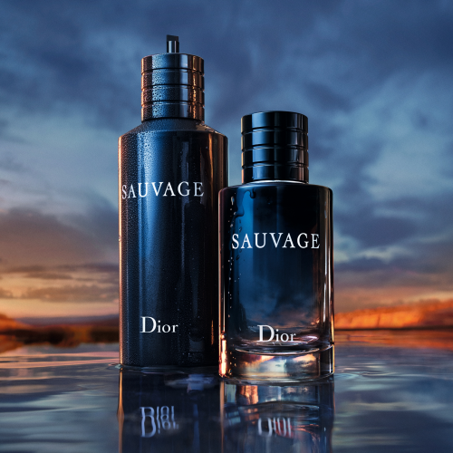
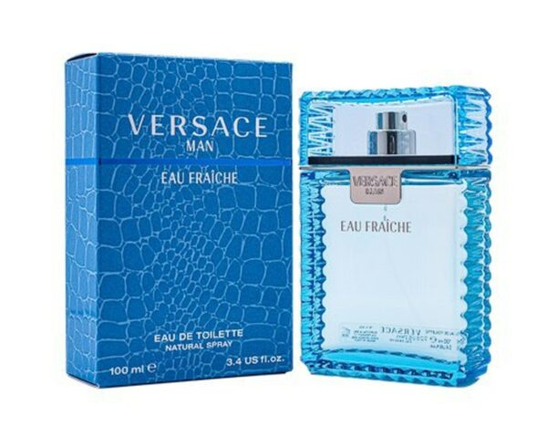

Se lanzo en 2015. Notas de Salida: Pimienta y Bergamota de Calabria.
Notas de Corazón: Geranio, Lavanda, Pimienta de Sichuan, Elemí, Pimienta rosa, Vetiver y Pachulí.
Notas de Fondo: Cedro, Ládano y Ambroxan.

Los mejores aroas del mercado.
Versace Man Eau Fraiche
Se lanzo en 2006. Notas de Salida: Bergamota, Palo de rosa de Brasil, Cardamomo, Limón (lima ácida) y Carambola.
Notas de Corazón: Estragón, Salvia, Cedro y Pimienta.
Notas de Fondo: Ámbar, Azafrán, Almizcle, Notas Amaderadas y Madera de Sicómoro.

Los mejores aroas del mercado.
Carolina Herrera Good Girl Supreme
Se lanzo en 2020. Las Notas de Salida son: Frutas del bosque y Jazmín egipcio.
Las Notas de Corazón son haba tonka y Nardos.
La Nota de Fondo es Vetiver.
Los mejores aroas del mercado.
Valentino Bor in Roma Donna
Se lanzo en 2019. Notas de Salida : Grosellas negras, Pimienta rosa y Bergamota.
Notas de Corazón : Jazmín sambac (sampaguita), Jazmín y Té del jazmín.
Notas de Fondo : Vainilla Bourbon, Cachemira y Madera de gaiac